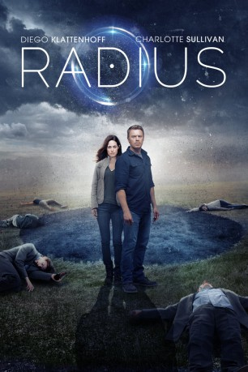

#10604 Radius
 gesehen am 03.02.2019
gesehen am 03.02.2019
 
 IMDB-Wertung: 6.2 / 10
IMDB-Wertung: 6.2 / 10  Tomatometer: 92
Tomatometer: 92  Metascore: 0
Metascore: 0 
Nach einem Autounfall erwacht Liam ohne Erinnerungen daran, wer er ist. Er beschließt, sich auf den Weg in die Stadt zu machen, um dort Hilfe zu suchen, doch alles, was er hier vorfindet, sind Leichen mit seltsam blassen Augen. Zunächst glaubt er an einen Virus, der für all das verantwortlich ist, doch nach und nach wird ihm die schreckliche Wahrheit bewusst: Jeder, der sich ihm in einem Radius von 15 Metern nähert, stirbt auf der Stelle.
Jahr: 2017
Dauer: 92 Minuten
FSK: 16
Land: Kanada Studio: At EntertainmentTonspuren: DD5.1 - ,
Untertitel:
Auflösung: 1080p (1920x800) Größe: 6952 MB
Genre: Thriller, Sci-Fi
Regisseur: Caroline Labrèche, Steeve Léonard
Drehbuch: Caroline Labrèche, Caroline Labrèche, Steeve Léonard, Steeve Léonard
Soundtrack: Benoît Charest
Darsteller:
 Diego Klattenhoff als Liam
Diego Klattenhoff als Liam- Charlotte Sullivan als Jane
- Brett Donahue als Sam
- Bradley Sawatzky als Dr. Mayborne
- Andrea del Campo als Scan Technician
- Nazariy Demkowicz als Ted
- Rick Skene als Dead Truck Driver
 Joe Cobden als Sheriff Laredo / TV Reporter
Joe Cobden als Sheriff Laredo / TV Reporter Alicia Johnston als Cop in Hospital 1
Alicia Johnston als Cop in Hospital 1- Garth Merkeley als Cop in Hospital 2
- Trevor Kristjanson als Orderly
- Bruce Dinsmore als Shock Host / TV Reporter
- Sean Skene als Cop in Sam's Store 1
 Darren Ross als Cop in Sam's Store 2
Darren Ross als Cop in Sam's Store 2- Robert Borges als Cop in Sam's Store 3
- Andrea Houssin als Nurse 1
- Mel Marginet als Nurse 2
- Julianne Jain als Nurse 3 / TV Reporter
- Elizabeth Neale als Nurse 4 / Operator 911
- Bj Verot als Bruce
- Kristen Sawatzky als Female Cop at Farm
 Darren Felbel als Male Cop at Farm
Darren Felbel als Male Cop at Farm- James Durham als Henry
- Shannon Guile als Dead Woman Driver
- Scott Johnson als Farmer
- Brendan Kelly als Medical Examiner / TV Reporter
- Dennis Nicomede als Businessman
- Cory Wojcik als Police Sergeant
- Holly Bernier als TV Reporter
- Daniela Akerblom als TV Reporter
- Matt Holland als TV Reporter / Chief of Police
- Michael Shintani als Female Cop's Son
Datei: X:\2017(N-Z)\Radius (2017, FSK16, 1920x800).mkv seit 31.01.2019
Festplatte: HD 2017(A-Z)-2018(A-F)
 Es gibt insgesamt 170 Filme in der Gruppe '2017(N-Z)'
Es gibt insgesamt 170 Filme in der Gruppe '2017(N-Z)'